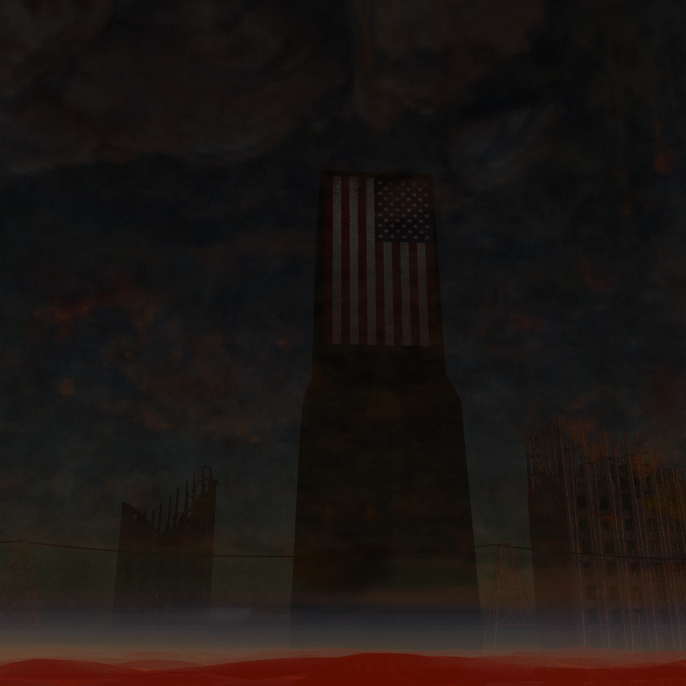
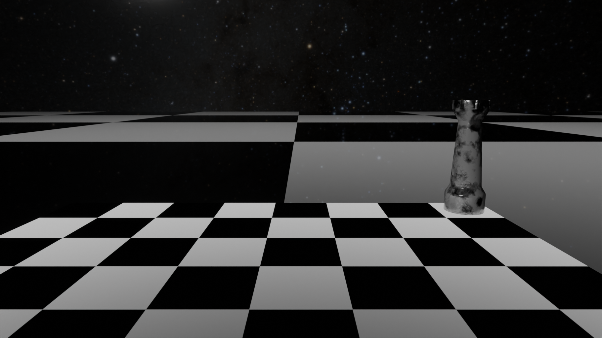
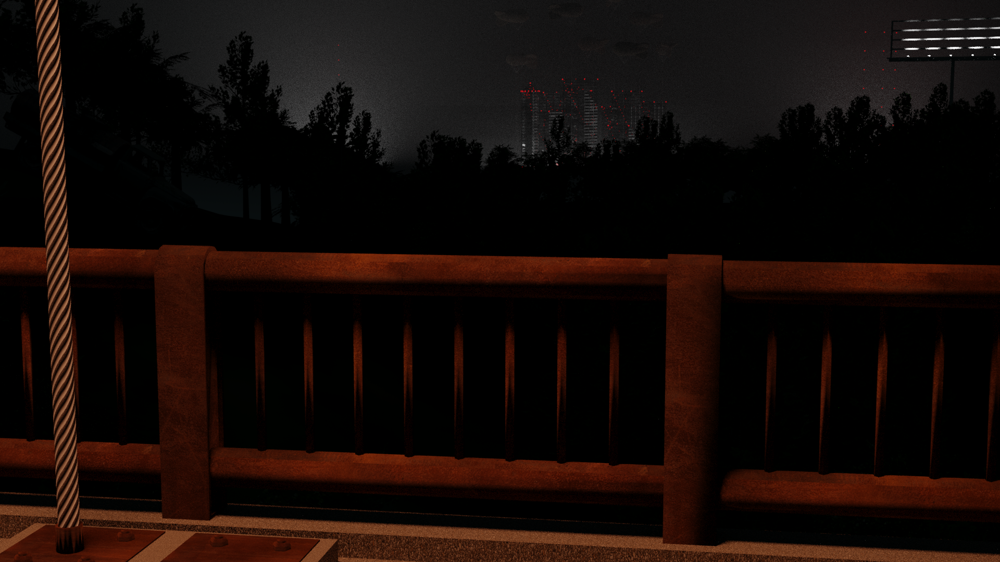

3D Artwork
The beauty of 3D artwork is in the marriage of logical and abstract creative thought. An incredible visual idea can pop into your head which can be then brought to life using clever shaders and math.
tl;dr ‐ Blender is fuckin cool

The Heresy
Aug 2023
An intense scene based on a song of the same name by Mushroomhead (a personal favorite of mine). If I ever release a cover of the song, some version of this scene will serve as the album cover artwork.
PTown
Feb 2023
A short animation based on a foggy twilight in Provincetown, Massachusetts. Most of the models and some of the materials are my original work, while others are assets provided by Poly Haven.

Science Facility
Jan 2023
A scene based on the office at my first job in Maine, where I worked 12-hour overnight shifts in a datacenter.

Chess
Jan 2023
One of several concepts for an (at the time of writing) unannounced and unreleased co-op adventure game.
December
December 2022
A snowy scene created for my latest single, My December. Aside from still frames serving as the album cover art, the animation was used as the Spotify Canvas video.

Outlook
December 2022
The first serious work I did in Blender, a S.T.A.L.K.E.R.-inspired scene based on views from the hills around Boston. It's not immediately clear, but the cable on the left side is intended to be a cable used to restrain barrage balloons like the ones seen in the distance over the city. An abandoned truck is also barely visible on the hill on the left side.
wtf is going on here
While I am competent with web frameworks like React and they certainly have their place on the web, I've always prided myself on being able to make simple, effective and efficient websites. I have a personal distaste for using a framework or a library just because you can. I don't believe good software is made when you put the solution ahead of the problem.
In that spirit, this site is pure HTML and CSS and can run on any device from the past 20 years. It uses less memory and loads faster than the Google homepage. No compromises have been made on SEO or performance for the sake of cool animations. This site also makes full use of semantic HTML, so you won't find a single <div> anywhere in the source code. You'll also find that the template-like behavior of this site has been achieved with pure CSS (and would function perfectly as raw HTML)!
I also obsess over responsive design - I encourage the user to resize their browser window on this site however they wish, and try to break the layout. If you do manage to break it, leave me a note letting me know so I can fix it.